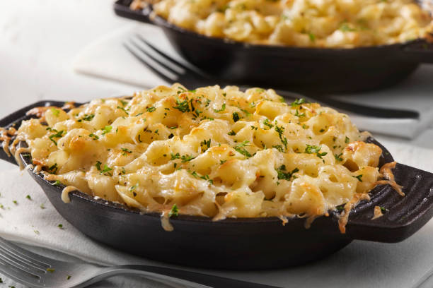

Homemade Mac and Cheese Recipe

A recipe all of your friends will be talking about!
Skip the boxed stuff and make homemade mac and cheese tonight. This from-scratch macaroni and cheese recipe will become a staple in your dinner rotation.
Ingedients:
Macaroni and Cheese:
- 8 ounces uncooked elbow macaroni
- 1/4 cup salted button
- 3 tablespoons all-purpose flour
- 2 1/2 cups milk, or more as needed
- 2 cups shredded sharp Chedder cheese
- 1/2 cup finely grated Parmesan cheese
- Salt and ground black pepper to taste (Optional)
Bread Crumb Topping:
- 2 Tablespoons salted butter
- 1/2 cup dry bread crumbs
- 1 pinch ground paprika
Steps:
- Preheat the oven to 350 degrees F (175 degrees C)
Grease an 8-inch square baking dish
- Make the macaroni and cheese: Bring a large pot
of lightly salted water to boil. Add macaroni and
simmer, stirring occasionally, until tender yet firm
to the bite, about 8 minutes; it will finish cooking
in the oven. Drain and transfer to the prepared baking
dish
- While the macaroni is cooking, melt 1/4 cup butter in
a medium skillet over low heat. Whisk in flour and stir
until the mixture becomes paste-lik and light golden
brown, 3-5 minutes.
- Gradually whisk 2 1/2 cups milk into the flour mixture,
and bring to a simmer. Stir in shredded Cheddar and
finely grated Parmesan cheeses; season with salt and
pepper. Cook and stir over low heat until cheese is
melted and sauce has thickened, 3 to 5 minutes, adding
up to 1/2 cup more milk if needed. Pour cheese sauce
over macaroni and stir until well combined.
- Make the bread crumb topping: Melt 2 tablespoons
butter in a skillet over medium heat. Add bread crumbs;
cook and stir until well coated and browned. Spreak bread
crumbs over macaroni and cheese, then sprinkle with paprika.
- Bake in the preheated oven until topping is golden brown
and macaroni and cheese is bubbling, about 30 minutes
Return Home